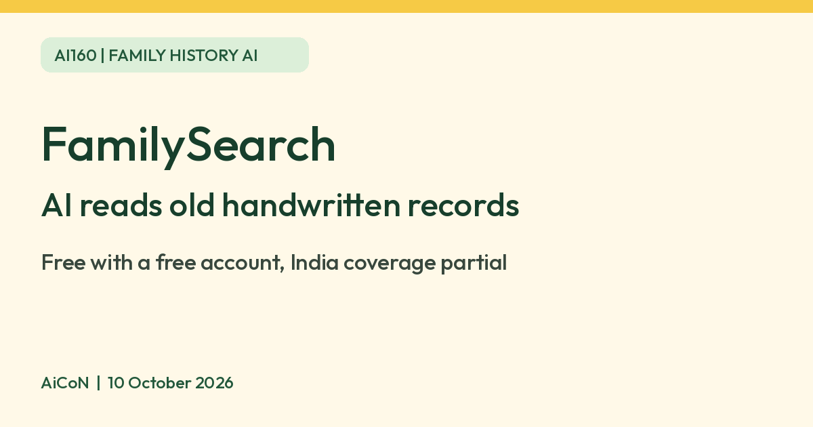

FamilySearch Full-Text Search: AI reads old handwritten records, free
FamilySearch is a free family history site. Its Full-Text Search uses AI to read handwriting in old scanned records. India coverage is partial, so expect gaps.

What it is
FamilySearch is a family history website. Its Full-Text Search feature uses AI to read the handwriting in old scanned records, so you can search names, places and dates inside documents that were never indexed by hand. Its August 2025 announcement said nearly 2 billion images from various countries and languages were searchable, and that it adds AI summaries of records and automatic translation of those summaries into your language.
Is it free
Yes. FamilySearch says it "really is free", and that accounts are free too. Links to third-party genealogy services are not guaranteed to be free. It is a nonprofit service sponsored by The Church of Jesus Christ of Latter-day Saints, and says it is open to everyone regardless of religion. You must sign in with a free account to see many records.
Is it useful for India
Partly. FamilySearch's own guide to India records lists some collections, such as Catholic church records, and notes that this one covers Delhi only. Other India entries include historical birth, marriage and burial indexes and a Bihar genealogical image collection. This general India guide is not a list of Full-Text Search coverage. FamilySearch says Full-Text Search is not yet available for all its image collections, and we could not confirm which Indian collections it covers. Browse the current Full-Text collections and filters before assuming your place or period is covered. We did not test it.
How to try it
- Create a free account at familysearch.org, following the account age and consent requirements shown there.
- Open the Search menu and choose Full Text, or use the official Full-Text Search page linked below. Enter keywords, a name, place or year range; you can also browse collections.
- Type a name, place or year, then open a result to read the AI summary and check it against the scanned image.
Limits to know
- The AI transcripts and summaries can be wrong, especially with faint or unusual handwriting. Check the original image.
- Coverage differs by country and collection. A free account does not guarantee remote access to every image: record-custodian agreements can restrict viewing or change availability.
- Family trees contain information about real people. Do not post details of living relatives without their consent.
- We did not test it ourselves.
Frequently asked questions
Do I need to pay to see records?
FamilySearch itself is free, but viewing restrictions can apply to specific images. Third-party sites linked from its guides may charge.
Sources: Full-Text Search help, Full-Text Search tool, Full-Text Search announcement, Is FamilySearch free, India records guide, Image restrictions. Checked 10 October 2026.